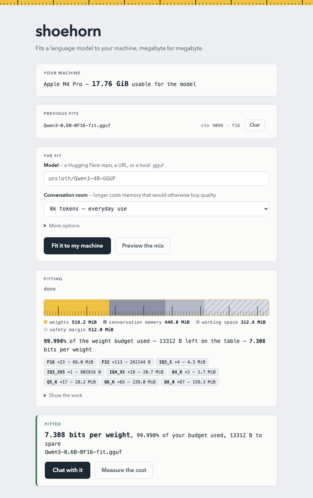
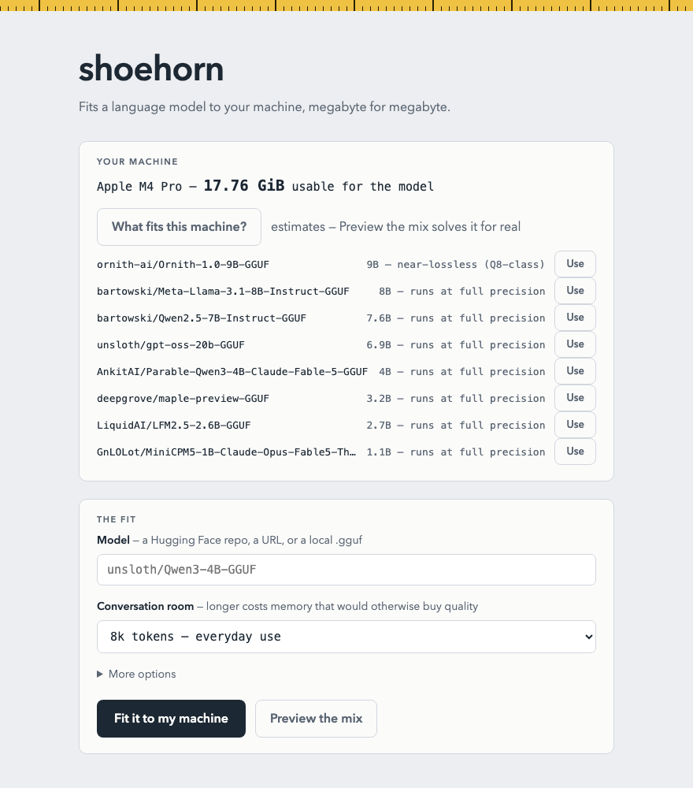

shoehorn
Fits a language model to your machine, megabyte for megabyte.
Preset quantizations ignore your hardware: pick one that fits and you either waste hundreds of megabytes of quality headroom or find out at load time it didn't fit after all. shoehorn starts from the memory you actually have, subtracts what inference itself needs, and solves a per-tensor mixed-precision assignment that lands within a rounding error of the remainder — routinely using 99.99% of the budget, sometimes to the byte.
What fits your machine?
Pick your hardware and this page scans Hugging Face's most-downloaded models for ones shoehorn can fit to your budget — ranked by the quality your memory affords. Runs entirely in your browser.
Install
shoehorn needs llama.cpp
on your PATH as the inference backend (the Homebrew install pulls it in for you).
Then shoehorn ui opens the local app — pick a model, press one
button, chat.
brew install notactuallytreyanastasio/shoehorn/shoehorn
Or from source: cargo install --path .
after cloning the repo.
All releases.
One button, your whole budget
The local web app measures your machine, streams the fit, renders the budget as a tape measure, puts a perplexity number on what the fit cost, and ends at a Chat button.

